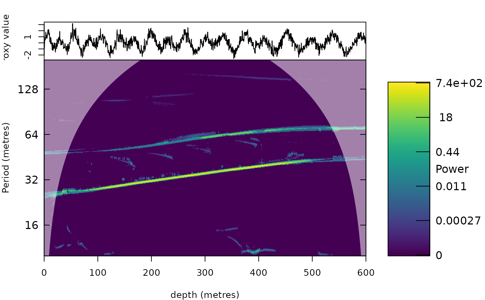

Synchrosqueezed wavelet-chirplet transform
Source:R/analyse_chirplet_sst.R, R/zzz_aliases_american.R
analyse_chirplet_sst.RdScalogram with chirped Morlet wavelets: at every scale and position the wavelet whose linear chirp (the change of its frequency along the record) matches the signal best is selected, and the coefficient is squeezed to the instantaneous period estimated with that matched wavelet. Where the period of a cycle changes quickly along the record (a changing sedimentation rate), the ordinary wavelet sees a frequency that sweeps across its bandwidth and the ridge blurs; the matched chirped wavelet follows the sweep, so the ridge stays sharp and its instantaneous period estimate is unbiased for a locally linear chirp (synchrosqueezed chirplet transforms: Chen et al. 2023; Li et al. 2026). The selected chirp gives, as a by-product, a map of the local rate of change of the period, i.e. of the sedimentation rate.
Usage
analyse_chirplet_sst(
data = NULL,
lowerPeriod = 2,
upperPeriod = 1024,
dj = 1/100,
omega_nr = c(8, 12, 16),
chirp = seq(-2, 2, by = 0.25),
n_iter = 4,
threshold = "riskshrink",
smooth = 0.01,
combine = c("geometric", "min", "mean"),
verbose = FALSE
)
analyze_chirplet_sst(
data = NULL,
lowerPeriod = 2,
upperPeriod = 1024,
dj = 1/100,
omega_nr = c(8, 12, 16),
chirp = seq(-2, 2, by = 0.25),
n_iter = 4,
threshold = "riskshrink",
smooth = 0.01,
combine = c("geometric", "min", "mean"),
verbose = FALSE
)Arguments
- data
Input record: a matrix or data frame with depth/time in column 1 and the proxy value in column 2 (further columns are ignored). Incomplete rows are removed, the rows are sorted by depth/time, the record is linearly interpolated to the median sampling interval and standardised. Required (
Default=NULLgives an error).- lowerPeriod, upperPeriod, dj
Period axis: shortest and longest period, in the same unit as the depth/time column of
data(numeric, 0 <lowerPeriod<upperPeriod;lowerPeriodat least twice the sampling interval), and the spacing of the periods in octaves (numeric, > 0;1/xgives x periods per doubling of the period). Defaults:lowerPeriod:Default=2;upperPeriod:Default=1024;dj:Default=1/100.- omega_nr
Central angular frequencies omega_0 (number of cycles) of the chirped Morlet wavelets of the orders that are combined (numeric vector, values > 0); a single value gives a single-order transform.
Default=c(8, 12, 16).- chirp
Dimensionless chirp values that are tried at every scale and position (numeric vector; 0 is the ordinary Morlet wavelet, negative and positive values a decreasing or increasing frequency, see the description). The best-matching value (largest modulus) is used; a wider and denser set follows faster changes of the period at a higher computation time.
Default=seq(-2, 2, by = 0.25).- n_iter
Number of iterations of the frequency reassignment (multisynchrosqueezing, integer, >= 1), see
analyse_wavelet_sst.Default=4.- threshold
Noise threshold of the synchrosqueezing:
"riskshrink","none"or a number (numeric, in standard deviations of the standardised record), as inanalyse_wavelet_sst.Default="riskshrink".- smooth
Standard deviation, in octaves, of the Gaussian smoothing along the period axis applied to every order before the orders are combined (numeric, >= 0; 0 switches it off).
Default=0.01.- combine
How the squeezed amplitudes of the orders are combined (character), one of
"geometric"(geometric mean),"min"(minimum: strictest consensus) or"mean"(arithmetic mean).Default="geometric"(the first element ofc("geometric", "min", "mean")).- verbose
Print a message when each order is done (logical, TRUE or FALSE).
Default=FALSE.
Value
A list with the structure of analyse_wavelet (so that plot_wavelet,
track_astro_hmm etc. work on it) with in addition Chirp: the relative rate of change of the
instantaneous period along the record (per depth unit; negative where the period shortens, i.e. where the
sedimentation rate falls) of the matched wavelet at every period and position, averaged over the orders.
Details
Several omega_nr values are combined as in analyse_superlet_sst (geometric mean of the
squeezed amplitudes). The chirp parameter is dimensionless: chirp = c means that the frequency of the
wavelet changes by c / omega_nr (relative) over one scale length (the period times omega_nr / 2 pi).
References
Chen, Z., Jiang, Q., Lin, J. and Shu, C. (2023). Synchrosqueezed chirplet transforms. Also: Li, S. et al. (2026). High-order synchrosqueezed wavelet-chirplet transform for instantaneous frequency and chirprate estimation. J. Comput. Appl. Math.
Examples
# \donttest{
z <- seq(0, 600, by = 0.5)
sr <- 1 + z / 600 # sedimentation rate doubles along the record
t <- cumsum(c(0, diff(z) / sr[-1]))
x <- sin(2 * pi * t / 23.7) + 0.6 * sin(2 * pi * t / 41) + rnorm(length(z), sd = 0.5)
cs <- analyse_chirplet_sst(data.frame(z, x), lowerPeriod = 10, upperPeriod = 200)
plot_wavelet(cs)

# }